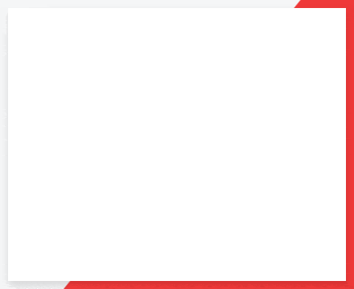

Settings
Background Image:
Choose a background image for the Start Page, to be stored as a Cookie locally: (only URLs are currently supported)
⠀
Modify Tiles
Select a tile to modify it's contents:



Hide elements of Start Page:
Choose what elements of the Start Page you'd like to have hidden:All tiles
Feren OS Blog and Twitter preview Credits